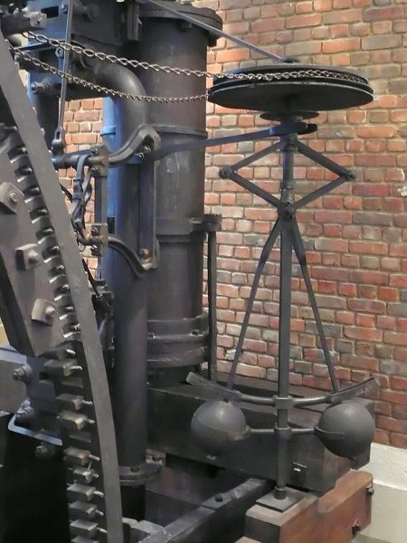
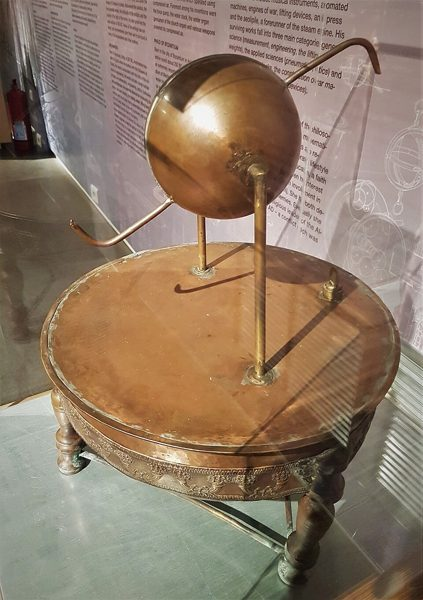
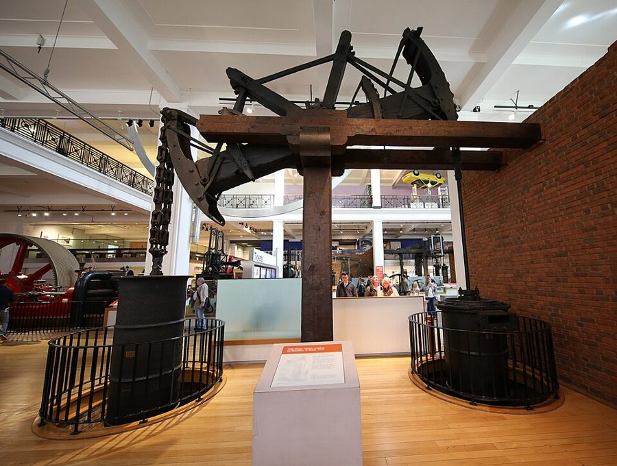
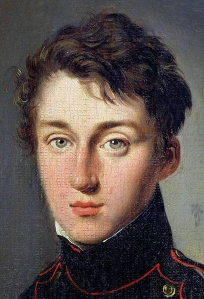
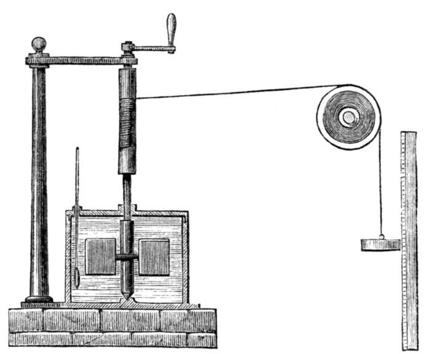

recoil
… the recoil can sometimes inflict …
回弹，反冲
橡皮筋断了往回弹。枪的后坐力也叫 recoil。
第 3 章是作者五个「时代」里的第二个：热的时代。这一页是前半章，问两件事：热凭什么能做功，做功有没有上限。开头先绕到结构里，橡皮筋和桥里都存着能。然后是全章最好看的一段：矿井积水，逼着萨弗里、纽科门、瓦特一代代把蒸汽机改出来。最后卡诺和克劳修斯给出答案：热变功有一条越不过的线，能量不会少，能用的却总在变少，这就是章名说的「不能白得」。
第 2 章讲重力的时代，把日常的「干活」换成了物理的功，能量是做功的本事。这一章是作者五个「时代」里的第二个。开头两节先把功和能推进结构里：桥、楼看着纹丝不动，里面也存着能。到 §3 第一句「热是另一种能量」才转进正题。这一页讲到热力学两条定律为止；火车、喷气发动机、核电和作者对这一章的总结在 03b。
别被带歪：§5 说卡诺循环不能被超过，理由写成「实际机器总有损失」。上限不是损失造成的：就算没有摩擦、一点不漏热，热机也得把一部分热排给冷端，这是第二定律。见概念块「卡诺循环和卡诺效率」。
蒸汽机一代比一代好，有没有一天能把烧煤得来的热全部变成功？
读的时候带着这几个问题，读完回来对照「检查一下理解」。
原书这一章没有小标题，一口气写下来。下面的节是本站按段落分的：粗体是本站起的节名，后面是档和英文词数；再下面是这一节开头的几个英文词，在 Kindle 里搜它就能跳过去。读完打个勾。
先把这一页用到的几个概念用书外的例子讲一遍。作者拿它们推出什么，读原书时自己看。后面各页用到时会链回这里。
把橡皮筋拉长，手做的功存进了橡皮筋：被拉开的形状本身就带着能，这是势能的一种。材料因为变形存下的势能，工程里叫应变能。它不是和势能、动能并列的第三种能。橡皮筋一断，应变能一下子放出来，变成弹回来的动能。
桥、楼、飞机的每个构件也一样，只是变形小到看不出。构件里的力分三种：拉力，往两头扯，像吊桥的钢索；压力，往中间挤，像桥墩；剪力，让两侧错开，像剪刀下的纸。荷载越大，变形越大，存的应变能越多；材料扛不住时，这些能一下子放出来，就是断裂和倒塌。
在这一页：§1 从橡皮筋起头，一路推到桥、手机和《北方天使》。第 6 章讲阻尼和桥的振动时还会用到它。
需求、能力在结构工程里是常用词，指荷载在构件里造成的效应和构件扛得住的极限；把它们说成两种功，是 Blockley 自己的讲法。外力对一样东西做的功，他叫外功，是「需求」；东西内部各部分变形时做的功，他叫内功，是「能力」。书架上压一摞书，搁板往下弯一点，书跟着往下走一点，这点外功变成了搁板里的应变能。搁板接得住这些功而不坏，就是能力跟得上需求。
两样功相等，背后是力学里的虚功原理：假想结构照某种方式动一小步，外力做的功等于内力做的功。§2 的三位数学家就这样算：假设穹顶照某种方式塌，比较两边的功，反推铁箍要扛多大的力，再乘 2 留余量。这个余量叫安全系数，第 6 章细讲。
在这一页：§1 提出，§2 拿穹顶示范。第 6 章讲安全系数和风险时回到这里。
一根竖轴跟着机器转，轴上挂两个铁球。转得越快，铁球甩得越开、越往上抬，通过连杆把进汽的阀门关小；转慢了，铁球垂下来，阀门开大。负载一轻，机器要变快，阀门自己收；负载一重，机器要变慢，阀门自己放。转速就这样稳住，不用人守着。
这就是负反馈：拿结果（转速）回头去调原因（进汽），往相反的方向调。书里没用「反馈」这个词。今天的例子到处都是：空调到了设定温度就停，汽车定速巡航上坡加油、下坡收油，CPU 热了自动降频。

在这一页：§4 瓦特的第二项改进。第 6 章讲系统时，作者还会回到控制和反馈。
热机从热端吸热，把一部分变成功，剩下的排给冷端，再回到起点，一圈圈转。卡诺设想一台没摩擦、不漏热、每一步都能原路倒回去（可逆）的理想热机，它的效率上限只看两端温度：
效率上限 = 1 − T冷 ÷ T热（温度用开尔文，摄氏度加 273.15）
书里 §5 的 T₂ 是热端、T₁ 是冷端，所以就是 1 − T₁ ÷ T₂；这个公式书里没写。100 °C 的蒸汽对 20 °C 的冷却水，上限约 21%。
书里说它不能被超过，理由写成实际机器总有损失。严格说上限来自第二定律：就算毫无损失，热机也必须把一部分热排给冷端才转得回起点，所以冷凝器省不掉。热和温度也要分开：一桶温水的热比一杯开水多，温度却低。
在这一页：§5 全节，原书图 8 画的就是它；模拟器也是它。03b 的燃气轮机、核电同样受这条线管。
卡诺那时，人们把热当成一种看不见的流体「热质」，总量不变，从热处流向冷处。摩擦、搅拌能不断生热，热质说就站不住了：热是能量，一定量的功总换成一定量的热，叫热功当量，1 卡约合 4.19 焦。书里写成「每克水升高 1 °C 要 4.187 焦」，严格说那是水的比热容，数一样，因为卡本来就是照水定义的。
第一定律：能量不会凭空多、凭空少，只换形式。第二定律：换的时候总有一部分再也拿不来做功；热不会自己从冷处跑到热处，要搬得另外花能量，冰箱、热泵就是这么干的。熵记的就是这笔账：理想的可逆循环转一圈熵不变，真实过程熵只增不减。屋里的热透过墙散到冬天的室外，能量一点没少，可再也用不上了。
在这一页：§6 全节，章名「不能白得」说的就是第二定律。第 6 章讲能源管理和㶲（yòng，可用能）时回到这里。
先猜：100 °C 的蒸汽，20 °C 的冷却水，理想热机的效率上限约 21%。想让它高一点，有两条路：把冷却水降到 0 °C，或者把蒸汽升到 120 °C。都是改 20 度，哪条提高得多？
一台理想热机：没摩擦、不漏热。选热端和冷端的温度，看它从热端每吸进 100 焦热，最多变出几焦功、至少排给冷端几焦。打开页面时是 100 °C 对 20 °C。
需要浏览器打开脚本才能运行。
各个控件：「热端温度」是锅炉里的蒸汽或燃烧室里的燃气有多热，「冷端温度」是冷凝器的冷却水或排气去的外界有多冷。勾上「也按摄氏度直接算」，图上多一条虚线、统计栏多一格，看拿摄氏度硬算会错多少。图上的实线是冷端不变时，热端从 0 到 1600 °C 各处的上限，圆点是你选的那一处；下面三根条是从热端吸进的 100 焦怎么分。
公式是本站补的，书里只有「温差越大效率越高」这句定性的话。温度的选项是本站定的演示值；1600 °C 是书里在 03b 那一半讲燃气轮机时给的进口温度。真实机器的效率作对照：纽科门机连锅炉带泵算，常估约 0.5%；最好的燃煤机组，安徽淮北的平山电厂二期，2022 年验收测得净效率 49.37%；最好的燃气—蒸汽联合循环，英国 Keadby 2 电厂，2024 年认定 64.18%。真机器都在上限以下，差的是摩擦、漏热、隔着温差传热这些损失。
书里点名的人、发明和工程，挑读懂这一页用得上的讲。按在书里出现的顺序排，节号是你在书里哪一节遇到它。
英国雕塑家 Antony Gormley 的钢雕塑，立在英格兰东北部盖茨黑德的一座小山上，俯瞰一条干道。书里给的尺寸：高 20 米，两翼展开 54 米。作者拿它说明，连一件公共艺术品也是结构，也存着应变能：它的主要部分得由结构工程师设计，保证在那么当风的地方也立得住。
1742 年，罗马圣彼得大殿的穹顶裂得厉害，教宗本笃十四世请三位数学家 Le Seur、Jacquier、Boscovich 查原因。他们的报告 1743 年初发表：假设穹顶照某种方式塌，算两边的虚功，得出底部要多大的箍力，乘上安全系数 2，建议加铁环。有人讥讽说，当初没有数学也把它盖起来了。书里说铁环后来加上了；实际主持的是被请来复核的帕多瓦数学家 Giovanni Poleni，铁环在他的指导下于 1743–1747 年间陆续装上。结构史上常拿这件事当力学计算头几回用到真建筑上的例子。
可他做这些只为了好玩。作者说，他把发明分成满足生活必需的和让人惊奇的两类，蒸汽的玩意儿属于后一类：用火让神庙的门自己打开，还有二十多种暗格、管道、虹吸的把戏。最有名的是一个空心球，两侧伸出弯管，蒸汽从管口喷出，球就转起来，今天叫汽转球（aeolipile，书里没给这个名字）。它靠喷气的反冲转，和 §3 讲热机时顺带提到的火箭道理相通。

英国的矿越挖越深，积水抽不干。萨弗里的机器没有活塞：罐子里灌满蒸汽，关上阀门，用冷水一激，蒸汽凝成水，罐里接近真空；打开通到井里的管子，井水就上来了。再通蒸汽，把水从另一根管子顶出去。说是「吸」，其实是外面的大气压在推，一个大气压最多托起约 10.3 米高的水，书后注释也有这一条。书里说「马力」一词由此而生：萨弗里那本书确实拿马来比，作为一个定了值的单位，马力是瓦特在 1780 年代定下的。
他沿用萨弗里的冷凝造真空，但把真空放进一个带活塞的汽缸，活塞拴在一根大木横梁的一头，另一头吊着矿井里的泵杆。一个循环两个冲程，见下图。泵杆那头不受 10.3 米的限制，更深的矿也排得动。代价是费煤：汽缸每个冲程都被冷水浇凉、再被蒸汽烫热，大半的热花在这一冷一热上，今天常估它整机只把煤的约 0.5% 变成有用的功。书里说帕潘 1707 年提议用活塞。那年帕潘确实发表过一种带活塞的抽水机，但活塞是被蒸汽顶着走的；纽科门用的「冷凝造真空、大气压压活塞」，帕潘早在 1690 年就做过实验。
1765 年，瓦特让蒸汽到另一个容器里冷凝，汽缸一直热着，省下大把的煤。后来他和合伙人 Matthew Boulton 又做了三件事。一是让蒸汽从上下两边轮流推活塞，活塞杆得是硬杆，他发明了平行连杆让杆走直线。书里说这让功率翻了一倍，翻倍靠的是两边都推，连杆是让它做得成的那一环。二是离心调速器，见概念块。三是用齿轮和曲柄把往复运动变成转动，蒸汽机从此能带工厂里的机器。1800 年前后 Richard Trevithick 改用高压蒸汽，03b 接着讲。

卡诺不造机器，他问的是：蒸汽机还能改进多少，有没有头？他把机器看成在一个热源和一个冷源之间干活：热从高温「流」到低温，像水从高处流下推动水车，落差越大，推出的功越多。这个水车的比方建在热质说上，热质说后来倒了，他的结论却留了下来，见「本站怎么看」。书里说他的理论当时没马上派上用场，留给工程师的是一个基准。

伦福德看人镗炮管，摩擦生的热能把水烧开，而且只要一直镗，热就一直有，这和「热质总量不变」对不上。焦耳让重物落下，带动水里的叶片搅水，量水温升了多少，算出多少功换多少热；德国的 Robert Mayer 也独立得出了这个比例。克劳修斯在这之上写出两条定律。书里把他的名字拼作 Rudolph，通行拼法是 Rudolf。伦福德本名 Thompson，和第 4 章的开尔文勋爵 William Thomson 是两个人。

读英文原书时值得停一下的词和句：工程里的熟词生义、英式说法、作者的比喻。灰色斜体是原句里连续的几个词，在 Kindle 里搜它就能找到；标「每个字都认识」的，是每个词都眼熟、合起来意思却变了的，最容易读错。点「记下」收进词本。
下面是作者在这一页里的主张，本站按主张之间的逻辑重排，不按原书顺序；每条后面是节号，拿不准就回书里那一节再读一遍。
橡皮筋、桥、手机、雕塑，只要受力就有变形，就存着应变能。外力加的功是需求，内部做的功是能力，两样时时在变，只有能力一直够用，这件事才算成。
§1三位数学家用新力学算出穹顶要加铁环，有人说当年没有数学也盖起来了。作者说这种心态今天还在，并预告第 6 章会讲它和风险的关系。
§2The gap is an essential part of risk, as we will discover in Chapter 6.— §2。本站译：这道鸿沟是风险的一个基本组成部分，第 6 章会讲到。
在希罗那里，蒸汽只是让人惊奇的玩具。一千多年后推着它往前走的是矿井积水：萨弗里冷凝造真空，纽科门加上活塞和横梁，瓦特把冷凝挪出汽缸。之后瓦特又加了调速器和曲柄，特里维西克改用高压，给后来的铁路铺了路。
§3 §4卡诺设想没有摩擦和泄漏的理想机器，发现就算这样，冷凝那一步也必然丢掉一部分热。理想循环造不出来，但可以当所有热机的参照。
§5热质说倒台以后，热被认作能量。克劳修斯的第一定律说总能量不变，第二定律说总有一部分能量再也做不了功；他用熵记这笔账：理想循环熵不变，真实过程熵增加。
§6some of the energy becomes irretrievable and no longer available to do work.— §6。本站译：有一部分能量再也收不回来，不能再拿来做功。
合起来：这半章讲热为什么能做功、做功为什么有上限。先看能量藏在结构里的样子，再看人怎样被矿井逼着把热变成功，最后卡诺和克劳修斯说清楚：能量不会丢，能用的那部分却总在流失，所以「不能白得」。
书 2012 年出版。下面挑出这一页里能被后来的研究或事情检验的说法，分「书里 / 当时 / 今天」几栏，并给一个结论。结论判的是标题里「书里的说法：」后面那一句。全书的这一节汇总在今天怎么看。
读完作者的主张，再看它站不站得住。每一块摆出三样：主流怎么看，作者怎么看，本站的评论。最后一句是本站对这一页的总体判断。
主流看法：物理学史一般这样讲：卡诺 1824 年的推理建在热质说上，把热当成守恒的流体，拿水车作比。随后 William Thomson（即后来的开尔文勋爵）写文章介绍卡诺的理论；1850 年克劳修斯把「热质守恒」换成能量守恒，保住了卡诺最要紧的结论：热机能做多少功，只看两端的温度。今天教科书里第二定律的「克劳修斯表述」和「开尔文表述」，就从这两人来。
作者的看法：卡诺在热质说里想出了理想的可逆循环，温差越大效率越高；它不能被超过，可以拿来当参照。§5
本站的评论：这是一个好例子：类比能带路，但不等于机理。水车的比方让卡诺看清「要有落差」，可热并不像水那样一点不少地流到低处，流过热机时有一部分变成了功。书里说卡诺循环不能被超过「是因为总有损失」，这句也要读对：损失让真机器离上限更远，上限本身来自第二定律。
主流看法：结构设计规范比的是力，不是功。欧洲规范 EN 1990 要求荷载在构件里产生的效应（力、弯矩）不超过构件的抗力，各国规范大体是这个思路。能量和虚功是算这些力的工具，结构工程师拿它找结构会怎样塌、多大荷载会塌，圣彼得穹顶那份报告走的就是这一路。
作者的看法：外功是需求，内功是能力；能力跟得上需求，事情才成。§1
本站的评论：这个说法好记，也是作者给第 6 章铺的路：到那里，能力和需求会变成强度和荷载，两者之比就是安全系数。中间跳了一步：强度是力，不是功。读的时候把它当作者统一全书的框架，不当力学定义。
主流看法：圣彼得穹顶的事有后续。教宗又请帕多瓦的数学家 Giovanni Poleni 复核，Poleni 也主张加铁环，并定下了铁环的数量、位置和尺寸，铁环在他的指导下于 1743–1747 年间装上；他的稳定分析写进了后来出版的回忆录。
作者的看法：反对者的话代表一种今天还有的心态：新理论和实践隔得太远时，人就抵触理论；这道鸿沟是风险的一部分。§2
本站的评论：故事本身是理论赢了：算出来要加箍，加了，又被另一位懂理论的人核了一遍。作者在这里只是断言鸿沟和风险有关，论证留给第 6 章。读到那里可以留意另一头：不信理论有风险，太信模型、忘了模型只是近似，也有风险，两头都是鸿沟。
本站的总体看法：§4–§6 是一条连贯的线：造机器、问上限、弄清热是什么，值得细读，配模拟器把 1 − T冷 ÷ T热 玩一遍。§1–§2 的「需求 / 能力」是作者给第 6 章铺的路，当他的框架读。马力的来历、热功当量的单位、「不能被超过」的理由，书里说得松，页面已分别交代。
先在心里答，再点开。答错的那题，回书里把对应那一节再读一遍。
拉长它时手做的功存成了应变能，这是势能的一种；断的时候变成动能，弹回来打手。
它内部做功的能力始终跟得上外力加给它的需求。这是作者自己的说法，第 6 章会把它变成安全系数。
水不是被「吸」上来的，是被罐外的大气压压上来的，一个大气压最多托起约 10.3 米高的水。
汽缸不用每个冲程被冷水浇凉、再被蒸汽烫热，热不再白白花在这一冷一热上。
约 21%，即 1 − 293 ÷ 373。温度要从绝对零度量起；摄氏度的 0 只是冰点，拿它算会得出 80% 这种错数。
总能量没少，这是第一定律。可散进冷空气的热再也拿不来做功，能用的那部分没了，熵增加了，这是第二定律。
热功当量说功和热按固定比例互换（1 卡约 4.19 焦），讲的是守恒；卡诺效率说热最多能换出多少功，讲的是上限。
用一句话说这一页：
想一想：你身边哪些东西是热机，哪些不是？汽车发动机、电饭煲、燃气热水器、空调、手机充电器。空调把屋里的热搬到更热的屋外，它和热机是什么关系？
读过又忘了，从这里想起来。挑的是这一页最值得记住的例子和说法，不按原书顺序；每条后面是节号，想细看就回书里那一节。全书各页的这一节都收在全书回顾。
一句话：受力的结构里存着应变能；最早的蒸汽机是矿井逼出来的；热变功有卡诺上限，能量守恒，能用的却只会变少。
拉长的橡皮筋、受力的桥都因变形存着应变能。结构塌了，就是这些能一下子放了出来。
§1萨弗里冷凝蒸汽造真空，把井水「吸」上来，最多 10.3 米；纽科门用活塞和横梁绕过了这个限制。
§4分离冷凝器让汽缸一直热着；离心调速器转快了关小汽门、转慢了开大，是早期的负反馈。
§4理想热机也得把一部分热排给冷端。100 °C 对 20 °C，最多约 21%；温度要用开尔文算。
§5能量总量不变，可每个真实过程都让一部分能量再也做不了功。熵记的就是这笔账。
§6